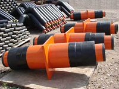

Предварительно изолированная труба – это сборная система, изготовляемая индустриальным способом на заводе. В такой системе основная труба и труба-оболочка (полиэтиленовая или оцинкованная) становятся единым целым, связанным изолирующим материалом – пенополиуретаном. ПИ - трубопроводы предназначены для прокладки тепловых сетей с рабочим давлением 1,6 МПа и температурой теплоносителя до 403°К (130°С) с допустимым кратковременным повышением температуры до 423°К (150°С).
Гидротеплоизоляционная система ПИ-труб и ПИ-фасонных изделий представляет собой жесткую конструкцию "труба в трубе", состоящую из стальной или стальной оцинкованной рабочей трубы, слоя ППУ (пенополиуретан) - изоляции и внешней гидрозащитной трубы-оболочки из термосветостабилизированного полиэтилена высокой плотности - для подземной прокладки или тонколистовой оцинкованной стали - для надземной прокладки.
Жесткость конструкции обусловлена наличием прочных связей между стальной трубой – слоем ППУ-изоляции и трубой–оболочкой и обеспечивается предварительной дробеметной или дробеструйной очисткой поверхности стальной трубы, оптимальными характеристиками ППУ–изоляции, коронированием поверхности полиэтиленовой трубы-оболочки. По результатам сравнения ППУ–изоляция превосходит аналоги по основным свойствам: теплопроводности и длительности безотказной эксплуатации.
Существенно повышает надежность работы ПИ-трубопроводов наличие системы оперативного дистанционного контроля состояния ППУ - изоляции (СОДК), которая позволяет своевременно обнаружить и устранить протечку теплоносителя, предотвращая аварии типичные для тепловых сетей других конструкций. Высокую экономическую эффективность использования ПИ-трубопроводов определяют следующие показатели:
О пенополиуретане
Пенополиуретан (ППУ) - это теплоизоляционный материал с уникальными свойствами. 5 см пенополиуретана по теплопроводности равны 1,6 м кирпичной кладки (коэффициент теплопроводности в пределах 0,028...0,035 Вт/м*К). Он обладает ничтожным водопоглощением и гигроскопичностью, высокой адгезией к различным материалам и высокой тепло- и морозостойкостью. Экологически безопасен при эксплуатации. Мелкоячеистая закрытопористая структура пенополиуретана позволяет получать бесшовные многослойные покрытия требуемой толщины, обеспечивающие низкие теплопотери и хорошие гидроизоляционные свойства. Вместе с тем такое покрытие обеспечивает прекрасные звукоизолирующие свойства. Широкий рецептурный диапазон полиуретанов позволяет получать материалы с различной плотностью и физико-механическими характеристиками. Пенополиуретан является жесткой неплавкой термореактивной пластмассой с сильно сетчатой структурой. Только 3% объема занимает твердый материал,образующий каркас из стенок и ребер, который придает материалу механическую прочность. Остальные 97% объема занимают поры. Доля закрытых пор составляет 94%. Пенополиуретан: